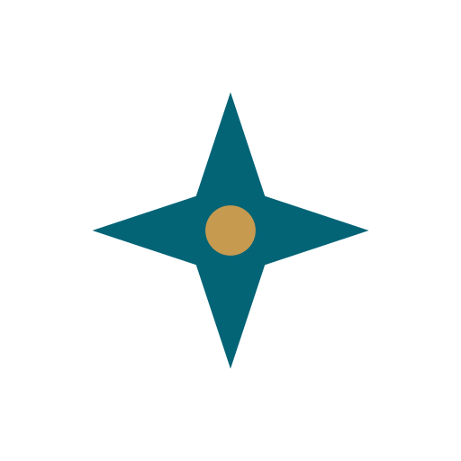

Réalisations / Zarya

« Ce voyage est-il possible pour moi ? »
Pas le prix d'un vol pour Tokyo. Avec ce passeport, ce statut de séjour, ce budget et ces dates : puis-je entrer, et à quelles conditions ?
- Nature
- Plateforme web multilingue
- Langues
- Français, anglais, espagnol, portugais, arabe
- Mon rôle
- Seul, conception et développement
- En ligne
- zaryaonline.ca
La question que personne ne traite sérieusement
Les comparateurs de voyage répondent tous à la même question : combien ça coûte. Aucun ne répond à celle qui vient avant : est-ce que moi, avec mon document de voyage et ma situation, je peux faire ce voyage.
Zarya propose quatre parcours d'analyse selon l'intention — tourisme, affaires, études, installation — et chacun pose ses propres questions. Un séjour étudiant se juge sur les frais de scolarité et la preuve de fonds, pas sur le prix des activités.
L'utilisateur nomme sa destination ou demande qu'on lui en propose selon son profil. Il reçoit un guide complet : verdict de faisabilité, règle de visa par étape avec sa source officielle datée, documents à préparer, budget ventilé, itinéraire jour par jour, échéancier des démarches, carte des lieux et liens de réservation filtrés.
À côté, des outils qui répondent instantanément sans passer par aucun modèle d'IA : fiches des 250 pays, comparateur de passeports, convertisseur de devises, horloges de tous les fuseaux en vigueur, carnet de voyage.
La contrainte qui a tout structuré
Le public visé inclut des passeports à mobilité restreinte, des diasporas, des étudiants et des personnes en situation administrative complexe. Pour eux, une information de visa fausse ne coûte pas un désagrément : elle coûte un refoulement à l'embarquement, ou une demande d'asile réputée abandonnée.
D'où la règle qui gouverne toute l'architecture :
Une donnée fausse ne se voit pas. Elle s'affiche en vert, elle a l'air sûre, et rien ne plante. Tout le reste est construit contre ça.
Ce qui distingue le produit
- Le trajet retour est vérifié. Personne ne le fait. Si vous résidez ailleurs que dans votre pays de nationalité, votre réadmission dépend de votre titre de séjour, pas de votre passeport : un permis qui expire pendant le voyage suffit à vous laisser dehors.
- Le document de voyage est pris pour ce qu'il est. Un titre de réfugié ou d'apatride n'ouvre pas les mêmes portes qu'un passeport ordinaire du même pays.
- Chaque règle porte sa source, datée. Ce qui n'a pas pu être confirmé est marqué « non vérifiable » plutôt que présenté comme sûr.
- L'indice de confiance est calculé, pas auto-déclaré. Il ne l'était pas au départ : on demandait au modèle de juger la qualité de ses propres sources, et il répondait « moyenne » à peu près toujours. Il repose désormais sur des faits comptables — règle confirmée à chaque étape, source gouvernementale, source de moins de dix-huit mois, dates précises, prix de vol relevé — et l'écran affiche ce qui manque et comment le combler.
- Le budget des activités est déduit de l'itinéraire, pas d'une intuition : somme des prix des lieux réellement au programme, plus une marge. Et le calcul refuse de conclure quand trop de prix manquent, plutôt que de rendre une somme trop basse à l'air précis.
- Les liens de réservation filtrent selon la gamme de budget retenue et proposent les opérateurs locaux qu'aucun comparateur international ne référence.
La pile technique
Next.js 16 (App Router, Turbopack), React 19, Tailwind CSS. Supabase pour l'authentification, PostgreSQL et la sécurité au niveau des lignes. Un modèle de langage pour la synthèse, une recherche web sourcée, et la validation des adresses réelles par géocodage. Déploiement sur Vercel : génération statique, routes d'API et tâches planifiées.
JavaScript plutôt que TypeScript — un choix assumé, compensé par des contrôles automatisés écrits sur mesure. Six dépendances de production seulement.
Le point que je veux mettre en avant : la vérification
Sans TypeScript, et avec un modèle de langage dans la boucle, la question centrale devient : comment sait-on que ça marche ?
Le dépôt contient 22 scripts de contrôle écrits sur mesure, lancés par une seule commande et en intégration continue. Chacun est né d'une panne réelle et porte, en commentaire, l'histoire de cette panne.
- check-countries vérifie que les 250 pays sélectionnables se résolvent. Il existe parce que 38 d'entre eux ne se résolvaient pas : la bibliothèque du sélecteur écrivait « Democratic Republic of the Congo », la base connaissait « Congo - Kinshasa ». La nationalité était rangée à vide, l'écran continuait d'afficher le pays choisi, et le champ ne revenait vide qu'au rechargement suivant.
- check-await cherche tout appel asynchrone ni attendu ni chaîné. Écrit après qu'un
awaitoublié a fait tomber tout l'espace connecté : lire une propriété sur une promesse rendundefined, ce qui est parfaitement légal et parfaitement silencieux. - check-promises refuse qu'un formulaire affiche un succès sans avoir rien envoyé. Deux formulaires écrivaient dans la mémoire du navigateur puis remerciaient l'utilisateur.
- check-currencies a détecté la Croatie affichée en kunas trois ans après son passage à l'euro.
- check-imports suit le graphe d'imports des 175 entrées de l'application en quelques secondes, là où une construction complète prendrait plusieurs minutes.
S'y ajoutent la cohérence des cinq dictionnaires, le référencement, les échéances, les prompts, la fiabilité des visas, les fuseaux horaires et la note d'adéquation des destinations.
Le point important : les contrôles sont eux-mêmes éprouvés. Pour chacun, j'ai réintroduit la panne qu'il surveille afin de vérifier qu'il échoue. Un contrôle qu'on n'a jamais vu échouer ne prouve rien.
Cinq langues, avec les adresses qui vont avec
L'interface existe en cinq langues, dont l'arabe avec mise en page de droite à gauche. Mais le site était traduit pour les humains et monolingue pour les moteurs de recherche : la langue vivait dans un contexte React, choisie après le chargement. Un robot ne lit que le premier HTML servi, toujours en français. Quelqu'un cherchant « visa Canada » en espagnol ne pouvait pas trouver le site.
La refonte donne à chaque langue son adresse (/faq, /es/faq, /ar/faq), avec canoniques par langue, hreflang réciproques et x-default. Le français garde ses adresses nues pour ne casser aucun lien existant. Les variantes ne dupliquent aucun code : ce sont des réexports de la route française, et un contrôle vérifie qu'aucune ne diverge de sa source.
La migration Next 14 vers 16
Menée en deux temps délibérés. D'abord le passage des API de requête en asynchrone sous l'ancienne version : attendre une valeur ordinaire la rend telle quelle, donc la réécriture était vérifiable seule. Ensuite seulement la montée de version. Si quelque chose cassait après, ce ne pouvait pas être la réécriture.
Une rupture ne figurait dans aucune documentation et n'est apparue qu'à la construction réelle : Next 16 refuse une configuration de segment de route réexportée, parce qu'il la lit par analyse statique.
Ce que ça démontre
- Un produit qui prend au sérieux des utilisateurs que les autres ignorent : le passeport, le statut de séjour et le retour traités comme des variables de premier ordre.
- Une discipline d'ingénierie : reproduire avant de corriger, vérifier sur la sortie plutôt que sur le code, éprouver les contrôles eux-mêmes.
- Une honnêteté d'interface tenue comme une règle : ne jamais afficher une promesse que le code ne tient pas. Quand une fonctionnalité n'est pas branchée, l'interface le dit au lieu de faire semblant.
- La capacité à mener une migration lourde sur une base réelle, en séquençant pour que chaque étape reste vérifiable isolément.